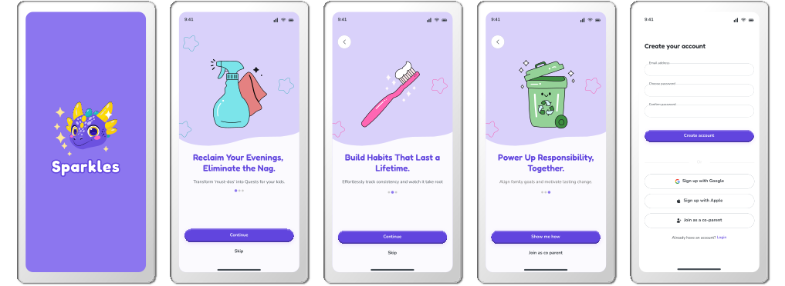
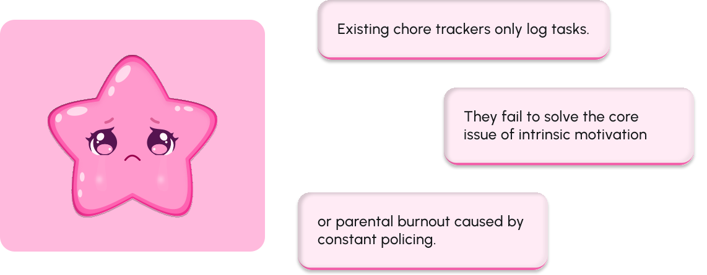
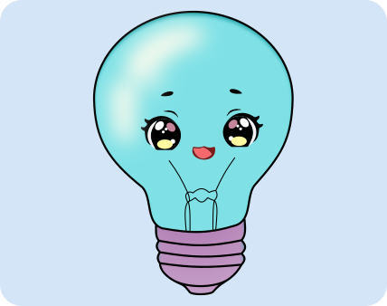
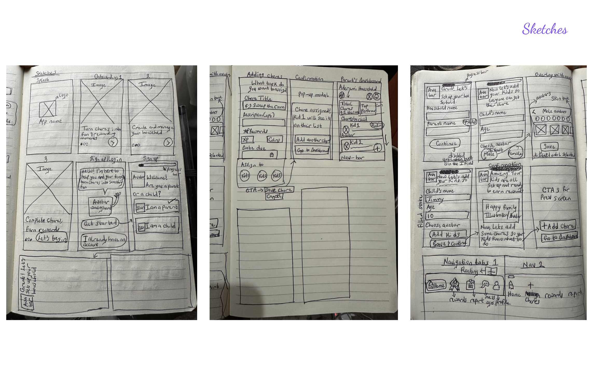
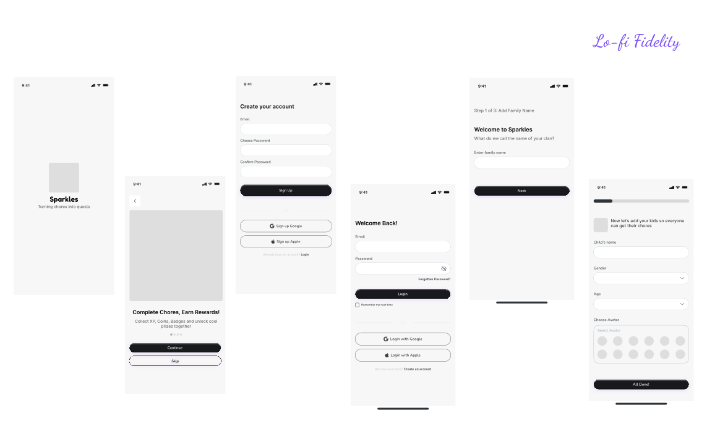
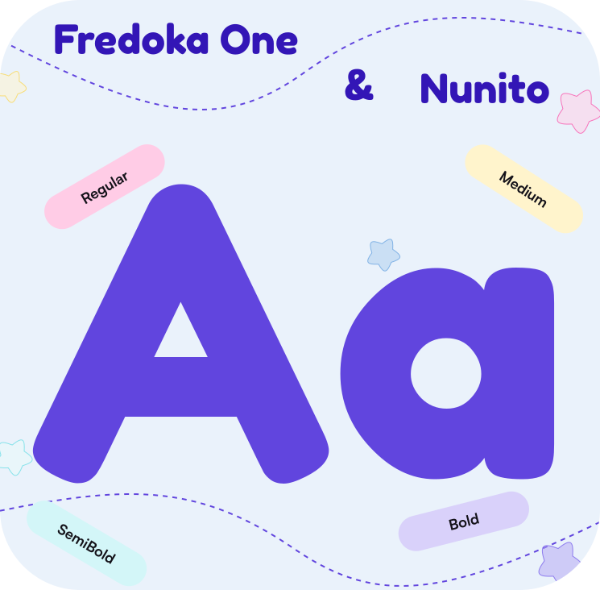
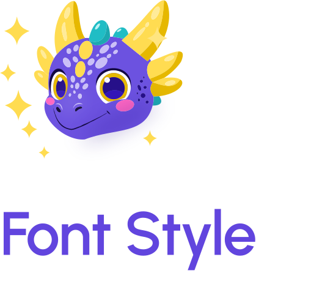
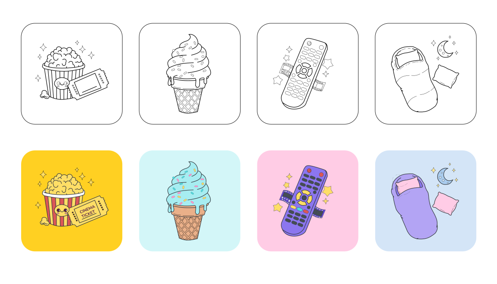
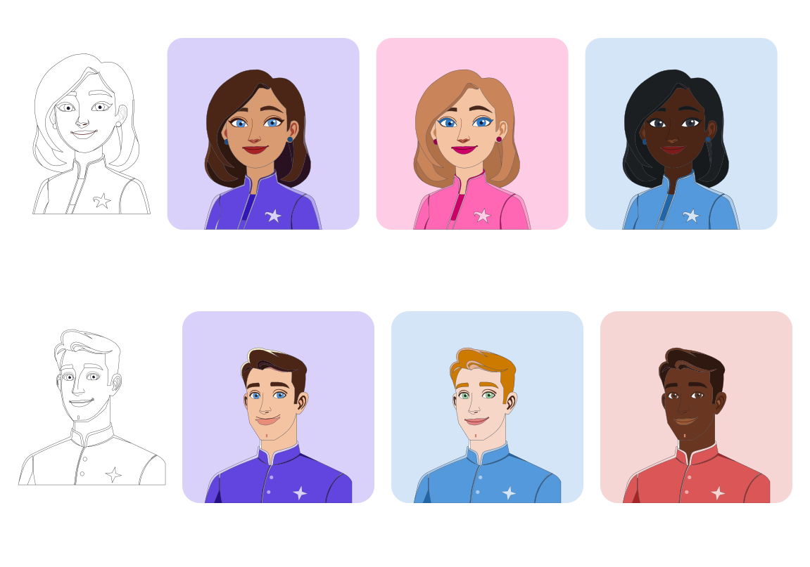

Works round the Globe
Works round the GlobeSparkles Gamified Chores Platform
Transforming household responsibilities into exciting adventures that kids love to complete


Overview
Role- Collaboration
UI/UX Designer, UX Researcher, Illustrator
Timeline
Oct-Nov 2025
Status
In development
Deliverables
Design Systems, User flows, Wireframes, UX Research, High Fidelity Prototypes, Visual Design, Illustration Design, Website Design
Summary
This is a gamified chore management app designed to bridge the gap between parental expectation and children's natural motivation. While most chore tracking tools stop at task logging, Sparkles goes further, transforming household responsibilities into an engaging quest-based system powered by XP, coins, achievement badges, and a fully customisable reward economy.
The product was designed for two distinct users: parents who are exhausted by constant enforcement and nagging, and children aged 5–12 who need meaningful incentives to build lasting habits.

Highlights



Challenges
Spotlighting issues


Solutions

Sparkles is a dual app system that replaces family stress with self-driven effort. We stop the cycle of nagging by turning every household task into a rewarding hero's adventure.
Kids are motivated to earn XP, Level up the Leaderboard and get Coins while the Parents Dashboard gives objective data on consistency and habit formation.
Research Summary
We conducted research with families to understand how existing chore tools were being used and where they were falling short. Parents reported frustration with inconsistent compliance, while children described chores as boring or unfair. These insights shaped the entire product direction.
Brainstorming

Wireframing

Key Features


Style Guide




Visual Designs

Custom Illustrations
Rewards

Parents Avatar


Reflections

This project taught me that designing for children is designing for honesty. They will immediately ignore anything that does not genuinely excite them and that pressure made me more intentional as a designer. I stopped asking 'does this work?' and started asking 'does this feel worth it?' That single shift in perspective now sits at the centre of everything I design.
This project also tested my discipline. Working against a tight deadline pushed me to make decisive design choices quickly, trust my instincts, and prioritise what truly mattered for the user experience. Looking back, the constraint was as valuable as the creative process itself.